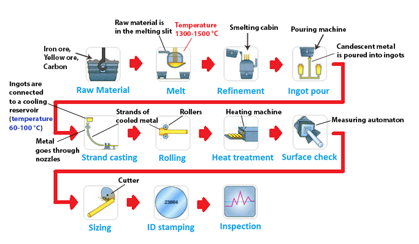

IELTS Writing task 1: describing a diagram
In this lesson you will learn how to describe a diagram in IELTS Writing task 1.
We will deal with a process diagram. Although diagrams are not very common in IELTS, they do appear in Writing and are very different from other types of graphs you can get. So it's a good idea to learn how to structure your answer when describing a diagram.
In this lesson you will:
- See IELTS Writing digram question
- Learn how to write a band 9 answer
- Learn useful vocabulary
As an example, let's take a look at the following question card:
The diagram illustrates how steel rods are manufactured in the furniture industry.
Summarize the information by selecting and reporting the main features and make comparisons where relevant.

As it was explained the previous lesson, to get the highest score for the first task in IELTS Writing, your answer should have the following structure:
- Introduction
- General overview
- Specific features
Now we'll take a look at each part of the answer.
1. Introduction
The first paragraph of your answer should be an introduction. For the introduction, you need to paraphrase the topic in your own words. It shouldn't be longer that 2 sentences.
And this is a possible way to write your introduction:
The diagram explains the way in which steel rods are produced for the furniture industry.You could also write the introduction in another way:
The diagram shows the process of metal rods production for the furniture industry.In fact, there are plenty of ways to write your introduction. Just keep in mind that you should use synonyms and paraphrase the topic from your question card.
2. Overview
After the introduction, you should give a general overview to summarize what’s going on in the diagram. Unlike line graphs, pie charts and bar charts, diagrams have no general trends or key changes to identify. So, in the overview paragraph you need to write:
- how the process begins and ends
- the number of stages
If the diagram has loops or repeating stages, or your process is cyclic - write that in your overview too!
Here is a good way to write a general overview:
Overall, the process consists of eleven stages, beginning with the raw material and ending up with the product’s inspection.
Always use word overall to start your overview. This way you will indicate the examiner that you’re describing general trends.
3. Specific features
After you've given the overview, you should write about specific details of your diagram. To do that, you need to describe each stage of your process in detail. Don't forget that you should provide information in a logical way!
This is a possible way of describing the specific features of our diagram:
First of all, iron ore, yellow ore and carbon are collected to serve as a raw material for steel rods manufacturing. After that, the raw material is melted in a melting slit, where it is heated to a temperature in range of 1300-1500 °C. The melted mass is then transferred to a smelting cabin to undergo refinement. Next, the candescent metal is put in a pouring machine and poured into ingots.
In the next stage, the ingots are connected to a cooling reservoir, where the temperature falls to 60-100 °C. Metal goes through special nozzles and cools down, forming strands. Following this, the metal strands proceed to rollers that change their shape. Next, the products are put into a heating machine, where they undergo heat treatment. Subsequently, a measuring automaton completes a surface check of the products.
After that, the metal rods are sized by special cutters and get ID stamping. Finally, the products undergo inspection and are ready for use.
Using connectors
Process is a series of changes that happen over time. That's why time connectors are extremely important for writing about process diagrams. Use these time connectors to describe specific features of your diagram:
- first of all
- firstly
- to begin
- after that
- then
- next
- in the next stage
- following this
- subsequently
- finally
Using additional information
Your diagram will often provide you some additional information and hints for most stages of the process. Make sure that you use all that information while describing specific features of your diagram!
However, sometimes you may see that some stage lacks information for description. For example, we only know that the third stage of our process is called refinement and it happens in a smelting cabin. But we don't know what exactly happens during this stage.
In this case, you can use a verb to undergo. To undergo = to experience. For example, you can write: "the material undergoes refinement in a smelting cabin".
And don't forget that you should NOT write a conclusion in Writing task 1 as you're not giving your opinion, you're describing the data.